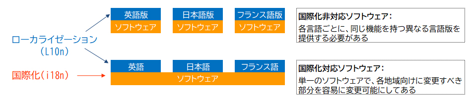
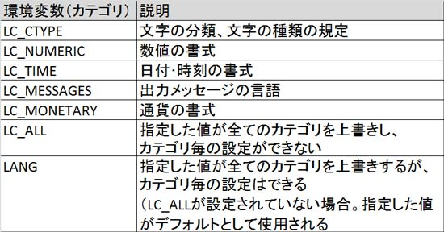

- 問題ID : 15473 ローカライゼーションと国際化
- 履歴
現在のロケールの設定が確認できるコマンドは次のうちどれか。
正解
locale
解説
現在のロケールの設定は「locale」コマンドで確認できます。
localeコマンドの書式は以下の通りです。
locale [-a]
オプションを指定しないで実行すると現在のロケールの設定が表示されます。
したがって正解は
・locale
です。
以下は実行例です。
# locale
LANG=ja_JP.UTF-8
LC_CTYPE="ja_JP.UTF-8"
LC_NUMERIC="ja_JP.UTF-8"
LC_TIME="ja_JP.UTF-8"
...（略）
その他の選択肢については以下の通りです。
・locale -a
現在のシステムで使用できるロケールが表示されますので、誤りです。
・locale -t
存在しないオプションです。
・iconv -f
・iconv -t
文字コードを変換するコマンドですので、誤りです。
参考
ソフトウェア利用者の住んでいる国や地域によって使用する言語は異なります。
Linuxなどのソフトウェアで表示される言語やフォント、日付や通貨などの書式を利用者の言語に翻訳したりして合わせることを「ローカライゼーション（Localization）」といいます。
また、ソフトウェア設計時から、多様な地域や多言語に対応できるように考慮することを「国際化（internationalization）」といいます。後述するロケールによって表示言語や書式を変えられます。
これらは、それぞれの単語の最初と最後のアルファベットとその間の文字数をとって、「L10n（Localization）」、「i18n（internationalization）」と呼ばれています。

利用者の地域情報（ロケール）を設定することによって表示言語や書式を変更できます。ロケールは環境変数を使用して設定でき、文字、数値、日付などによって複数のカテゴリに分かれています。
以下はロケール用の主な環境変数（カテゴリ）です。

現在のロケールの設定は「locale」コマンドで確認できます。
localeコマンドの書式は以下の通りです。
locale [-a]
オプションを指定しないで実行すると現在のロケールの設定が表示されます。
# locale
LANG=ja_JP.UTF-8
LC_CTYPE="ja_JP.UTF-8"
LC_NUMERIC="ja_JP.UTF-8"
LC_TIME="ja_JP.UTF-8"
...（略）
「-a」オプションを使用すると現在のシステムで使用できるロケールが表示されます。
# locale -a
aa_DJ
aa_DJ.iso88591
aa_DJ.utf8
aa_ER
...（略）
デ フォルトのロケールはC（POSIX）ロケールです。Cロケールのエンコーディング（数値と文字の対応・変換の方式）はASCIIで、数値や日付の書式は 米国英語です。日本とフランスなどロケールが異なる環境でスクリプトを実行しても、英語で共通の出力が得られます。またロケールに関する処理が行われない 分、処理の高速化が期待できます。
# export LANG=C
systemdが動作するシステムでのシステム全体の ロケール設定ファイルは「/etc/locale.conf」です。上表のロケール用の環境変数を設定できます。ただし、LC_ALLは全てのカテゴリを 上書きするので「/etc/locale.conf」に設定することは推奨されません。
# cat /etc/locale.conf
LANG="ja_JP.UTF-8"